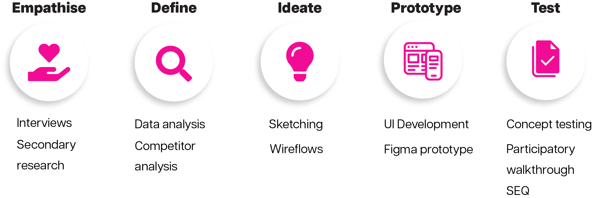
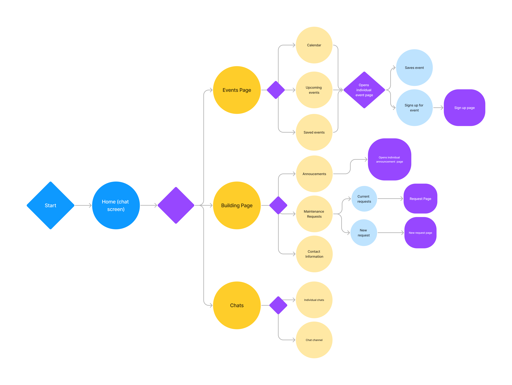
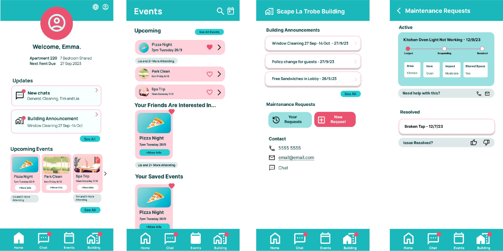

Scape Portal
Improving Communication in Student Accommodation
Improving Communication in Student Accommodation
Purpose-built student accommodation (PBSA) creates unique neighbourhood communities for students at universities in Australia. This project focused on exploring the communication dynamics, relationships, and discourse that exist within these communities, with research taking place at Scape La Trobe in Melbourne's CBD.
Exploratory research interviews revealed significant issues within the Scape community regarding the efficiency of management-resident communication, leading to unresolved maintenance problems. To address this challenge, an online solution was necessary to streamline the process of reporting building issues to management. Another key issue was the communication between residents in shared apartments, with cleaning issues being identified as a main problem for residents.
To solve the issues for residents at Scape La Trobe in Melbourne, my solution involved an enhanced system for reporting maintenance issues within the apartments. I developed a dedicated building page within the Scape Portal app to facilitate more efficient communication between residents and management regarding building problems.
I conducted five interviews with members of the Scape La Trobe community. The questions focused on various topics, including communication, management, cleaning, background history, and major challenges faced while living in the community.
Residents spoke about problems with not feeling involved with the community due to not knowing about events, and because of the layout of the building. Some also spoke of frustrations with the apartments cleanliness. Out of the four main problems residents identified, three participants specifically highlighted building maintenance issues, making this the focal point of my solution.
The current system used by Scape for resident maintenance inquiries is Starrez Housing. A competitor analysis revealed several issues within this platform, which provided context for the issues discovered during the interviews. Key problems included:
The existing user flow for residents to address maintenance issues was difficult for users to navigate and successfully resolve maintenance problems. Scape Portal aims to offer a more efficient method for residents, particularly when initial management responses fail to resolve their issues. Below is the user flow for Scape Portal.
The first iteration of high-fidelity mockups featured a color palette of teal and pink, aligned with Scape's branding. Low and medium-fidelity mockups were developed in response to the insights gathered from interviews and analysis. One critical aspect I focused on was clearly communicating the visibility status of the maintenance page.
To evaluate my solution, I conducted a participatory walkthrough with the task: "In this app, find your current building maintenance requests to check the completion status of the 'Kitchen Oven Light Not Working' request." Four tests were conducted, resulting in an average System Usability Scale (SEQ) score of 5.5/7.
Common Issues: Users frequently attempted to complete the task through the chat feature, and some found the dashboard confusing, as they were looking for notifications related to maintenance. Overall, participants completed the task effectively, however, there is room for further development.
A 5-second test was conducted on the homepage to test whether the design effectively conveyed a product for managing building communication. Most of the seven participants recognized the app's purpose related to building management, but the visual design raised concerns.
Participants noted that the design did not seem trustworthy, and they struggled to identify notifications or events from their recollections of the page.
A tree test was performed to evaluate the navigational structure of Scape Portal. For the maintenance navigation, a successful rate of 83% was recorded when six participants were asked, "Where would you find active maintenance requests in your apartment?" The results of the test were mostly successful, with the following statistics being recorded.
Overall Directness: 8/10
Task Score: 83% success rate
In response to the testing feedback, I made final iterations to Scape Portal, particularly addressing the design challenges identified in the 5-second test. These refinements aim to create a more intuitive and trustworthy user experience that meets the needs of the Scape community.
This involved developing a UI with a higher contrast color palette than previous iterations, as seen below.